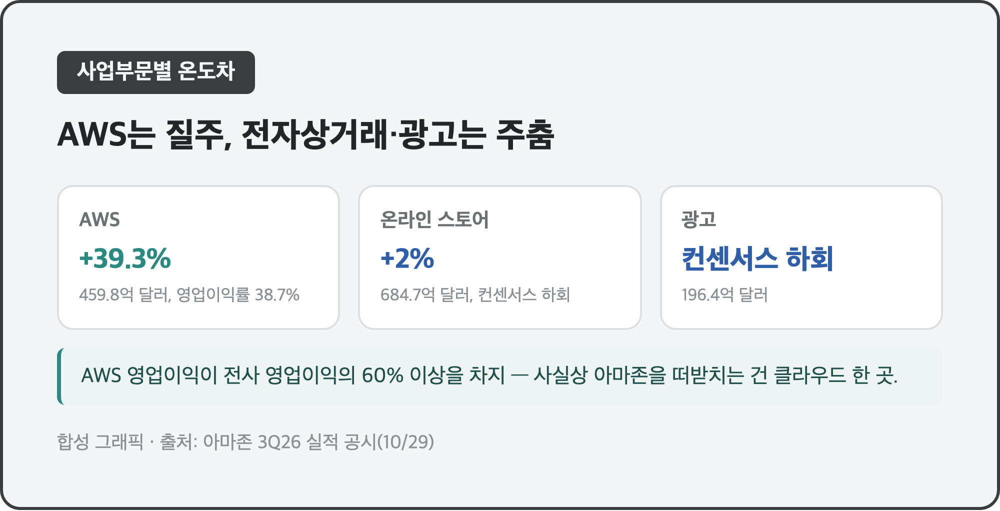
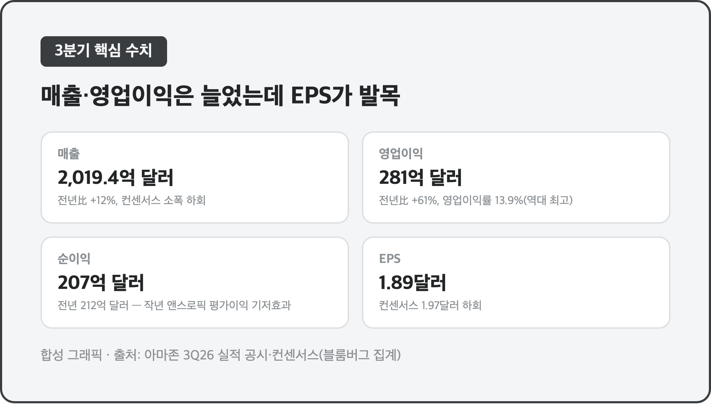
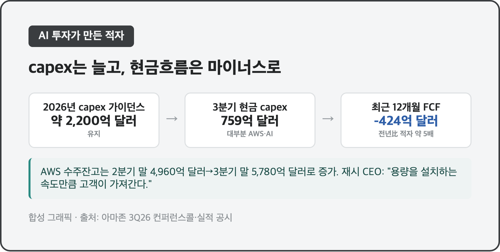
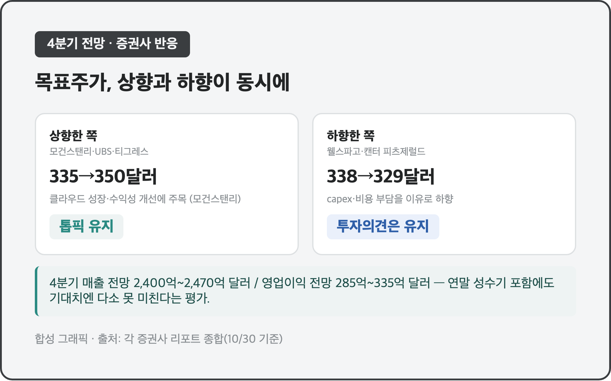
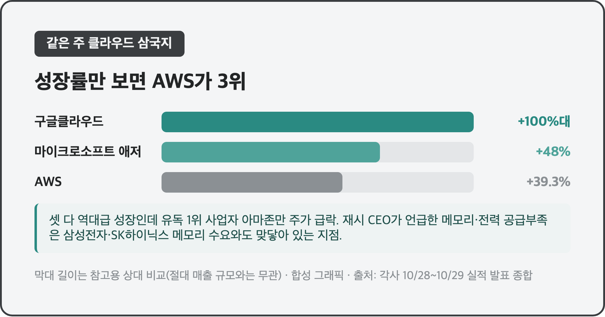

매출도 늘고 영업이익도 역대급으로 늘었는데, 주가는 왜 떨어졌을까요? 어젯밤(현지시각 10/29) 아마존 3분기 실적이 그랬습니다.
같은 주에 구글(알파벳)도 실적 발표 후 급락했었는데요, 이번엔 아마존 차례였어요. 숫자를 하나씩 뜯어보면 이유가 꽤 선명하게 보입니다.
☁️ AWS는 날아가는데 전자상거래·광고는 주춤 – 한 회사 안의 온도차
AWS 매출 459억 8,400만 달러 (+39.3%), 영업이익 177억 7,300만 달러 (+55%) / 온라인 스토어 매출 684억 7,000만 달러 (+2%, 컨센서스 하회) / 광고 매출 196억 4,000만 달러 (컨센서스 하회) |

| 부문 | 매출 | 전년比 | 비고 |
| AWS | 459억 8,400만 달러 | +39.3% | 영업이익률 38.7%, 전사 영업이익의 60%+ |
| 온라인 스토어 | 684억 7,000만 달러 | +2% | 컨센서스(약 696억 달러) 하회 |
| 광고 | 196억 4,000만 달러 | - | 컨센서스(208억 2,000만 달러) 하회 |
AWS 영업이익만으로 전체 영업이익의 60% 넘게 채웠다고 하니, 사실상 아마존을 떠받치고 있는 건 클라우드 쪽이라고 봐도 될 것 같아요. 반면 본업인 온라인 쇼핑몰은 2% 성장에 그쳤고, 광고 매출도 기대치를 못 채웠습니다. 성장률 숫자만 보면 AWS 혼자 다른 회사처럼 느껴지더라고요.
📉 영업이익 61% 늘었는데 주가는 왜 떨어졌나 – EPS가 발목
매출 2,019억 4,000만 달러 (+12%, 컨센서스 소폭 하회) / 영업이익 281억 달러 (+61%, 영업이익률 13.9%로 역대 최고) / 순이익 207억 달러, EPS 1.89달러 (컨센서스 1.97달러 하회) |

매출은 컨센서스(약 2,022억 5,000만 달러)에 살짝 못 미쳤고, EPS는 1.89달러로 시장 전망 1.97달러를 밑돌았어요. 매출·EPS가 동시에 기대치 아래였다고 해서 일부 매체는 "더블 미스"라고 불렀습니다. 다만 순이익이 전년(212억 달러)보다 줄어든 건 실적이 나빠져서라기보다, 작년 3분기에 앤스로픽 지분평가이익 약 95억 달러가 한 번 반영됐던 기저효과가 커요 — 올해는 그 일회성 이익이 없으니 순이익만 놓고 보면 불리하게 비교되는 구조인 거죠.
주가는 정규장에서 약 -4.25%로 마감했고, 실적 발표 후 시간외 거래에서는 매체마다 -4%대부터 -7%대까지 다르게 보도됐어요(발표 직후와 컨퍼런스콜이 끝난 뒤 시점 차이로 보여요, 정확한 마감 낙폭은 다음 정규장을 봐야 확인될 것 같습니다). 영업이익이 역대급으로 늘었는데도 주가가 이렇게 빠진 걸 보면, 시장은 이익의 크기보다 "다음 분기에도 이 속도가 유지되느냐"를 더 따지는 것 같아요.
💸 AI 투자가 만든 적자 – 현금흐름이 마이너스 424억 달러
2026년 설비투자(capex) 가이던스 약 2,200억 달러 (유지) / 최근 12개월 잉여현금흐름(FCF) -424억 달러 (전년比 적자 약 5배 확대) / AWS 수주잔고 5,780억 달러 (2분기 말 4,960억 달러) |

3분기 한 분기 현금 capex만 759억 달러가 들어갔다고 해요. 이익은 역대급으로 늘었는데 정작 현금은 2개 분기 연속 마이너스라는 게 투자자 입장에서는 헷갈릴 수밖에 없는 그림이죠. CEO 앤디 재시는 컨퍼런스콜에서 서버·네트워크 장비가 손익분기점을 넘으면 그 뒤 2~3년간 꽤 많은 현금을 만들어내지만, 지금처럼 여러 데이터센터를 한꺼번에 미리 지어야 하는 국면에서는 가동 전까지 capex 부담과 현금흐름 악화를 감수할 수밖에 없다고 설명했어요. 2027년엔 올해보다 "의미 있게 더" 쓸 거라고도 했고요. 재시는 지난주 한 인터뷰에서 "AWS는 2026년 용량이 이미 다 팔렸고 2027년도 대부분, 2028년도 상당 부분이 팔렸다"고 밝힌 바 있는데, 투자 규모가 수요를 못 따라가는 상황이 당분간 계속될 거라는 뜻으로 읽혀요.
🔮 4분기 가이던스와 증권사들의 엇갈린 시선
4분기 매출 전망 2,400억~2,470억 달러 / 4분기 영업이익 전망 285억~335억 달러 |

| 증권사 | 방향 | 목표주가 |
| 모건스탠리 | 상향 | 335→350달러 (톱픽 유지) |
| UBS | 상향 | 318→348달러 |
| 티그레스 파이낸셜 | 상향 | 385달러 (매수) |
| 웰스파고 | 하향 | 338→329달러 (비중확대 유지) |
| 캔터 피츠제럴드 | 하향 | 320→310달러 (비중확대 유지) |
연말 쇼핑 성수기가 낀 분기인데도 4분기 가이던스가 시장 기대보다 낮게 나왔다는 평가가 있었어요. 재밌는 건 이 와중에도 증권사들 의견이 깔끔하게 갈렸다는 거예요. 모건스탠리·UBS는 클라우드 성장과 수익성 개선에 무게를 두고 목표주가를 올렸고, 웰스파고·캔터 피츠제럴드는 비용 부담을 이유로 내렸습니다. 다만 하향한 쪽도 투자의견 자체는 "비중확대"를 유지했다는 공통점이 있어요 — 방향은 갈려도 "그래도 사라"는 쪽이 더 많았던 셈이죠.
⚔️ 같은 주 클라우드 삼국지 – 애저 48%, 구글클라우드 두 배, AWS 39%
AWS +39.3% / 마이크로소프트 애저 +48% (매출 331억 7,000만 달러) / 구글클라우드 전년比 두 배 이상 성장 |

같은 주에 마이크로소프트(애저 매출 331억 7,000만 달러, +48%, 시간외 +4.5% 상승)와 구글(클라우드 매출 전년比 두 배 이상)도 나란히 실적을 냈는데, 성장률만 보면 셋 다 역대급이었어요. 그런데 유독 1위 사업자인 아마존만 주가가 급락했죠. 성장률 자체는 AWS가 셋 중 가장 낮아서 "클라우드 1위 자리가 흔들리는 거 아니냐"는 해석도 나왔더라고요. 개인적으로는 재시가 말한 메모리·데이터센터 공급 부족 얘기가 더 눈에 들어왔어요. 메모리가 부족해서 capex가 늘어난다는 건, 거꾸로 보면 삼성전자·SK하이닉스 같은 메모리 회사들 주문이 계속 들어온다는 뜻이기도 하거든요. 제가 들고 있는 삼성전자 25주 입장에서는, 아마존의 AI 투자 부담이 오히려 메모리 쪽엔 우호적인 신호로도 읽히더라고요.
마무리하며
영업이익은 역대 최고치(281억 달러, 영업이익률 13.9%)를 찍었는데 주가는 시간외에서 크게 흔들렸습니다. AWS는 39%대 성장으로 혼자 잘했고, 본업인 전자상거래·광고가 발목을 잡았고, 여기에 AI 투자가 만든 현금흐름 적자까지 겹친 하루였어요.
다음에 볼 건 다음 정규장에서 낙폭이 어디로 정리되는지, 4분기 연말 쇼핑 시즌 실적이 가이던스를 넘길지, 그리고 이 메모리 수요가 삼성전자·SK하이닉스 쪽 실적에 어떻게 이어지는지예요 📦